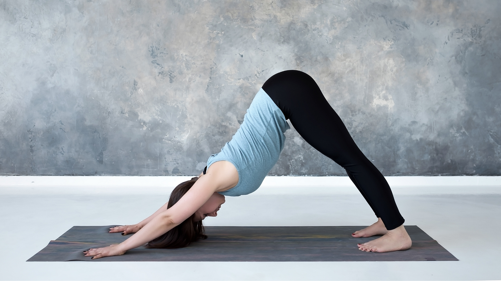
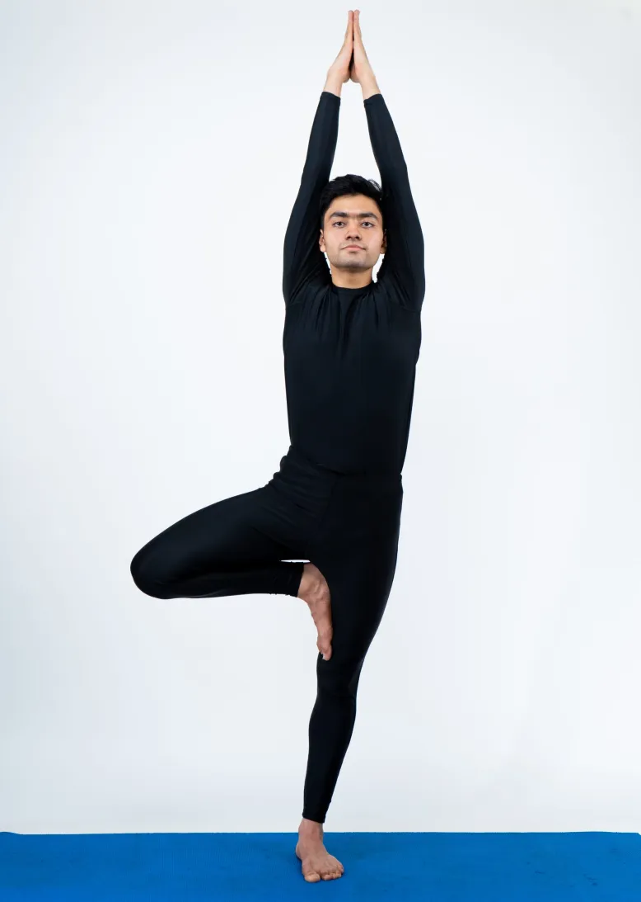
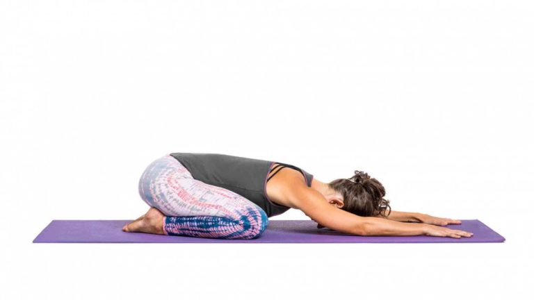
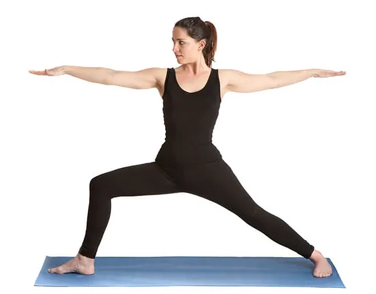
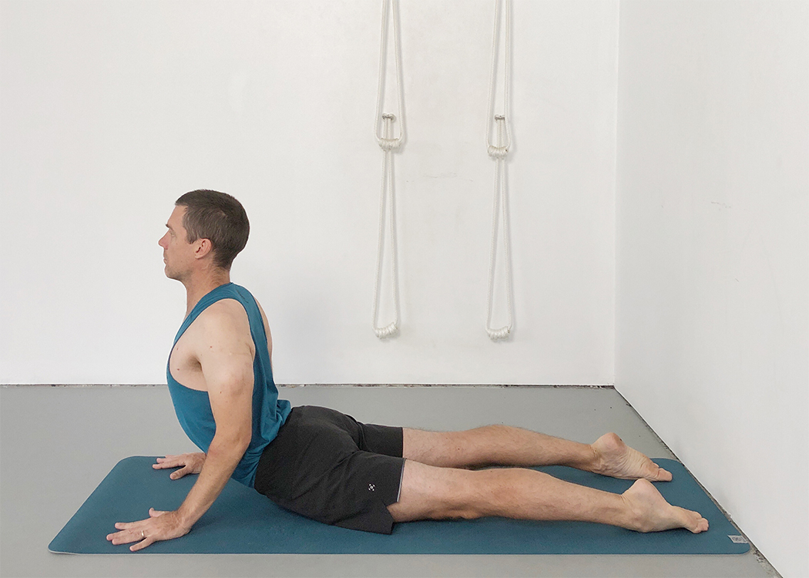
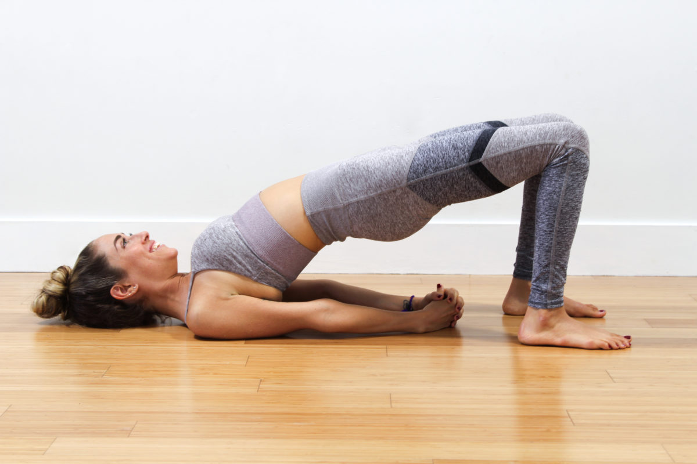
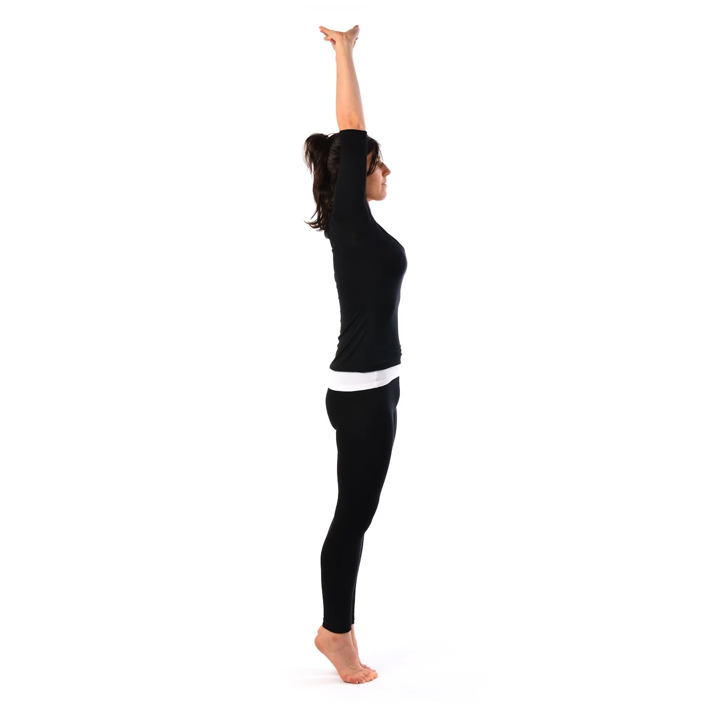
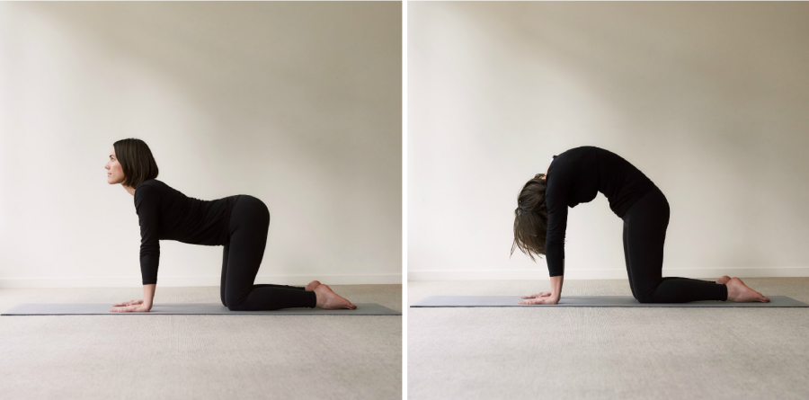
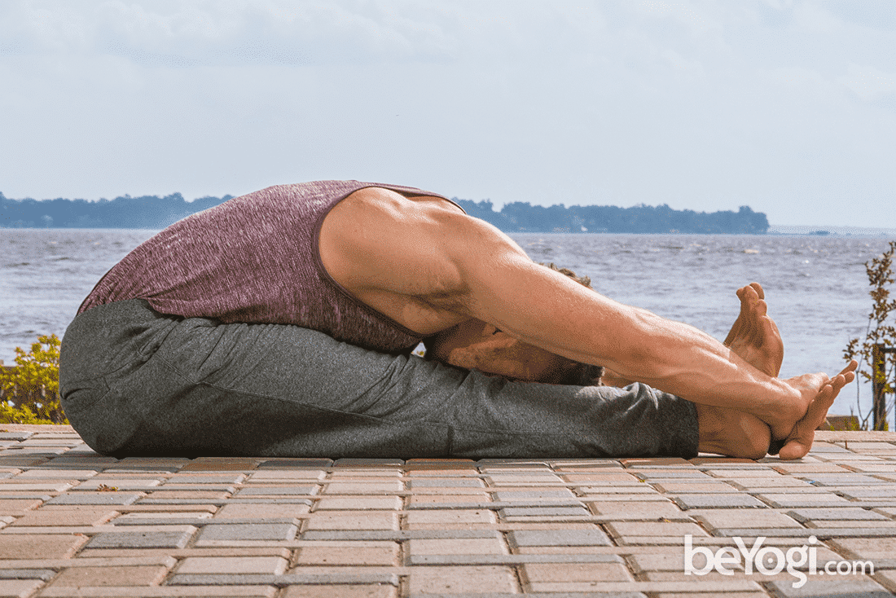
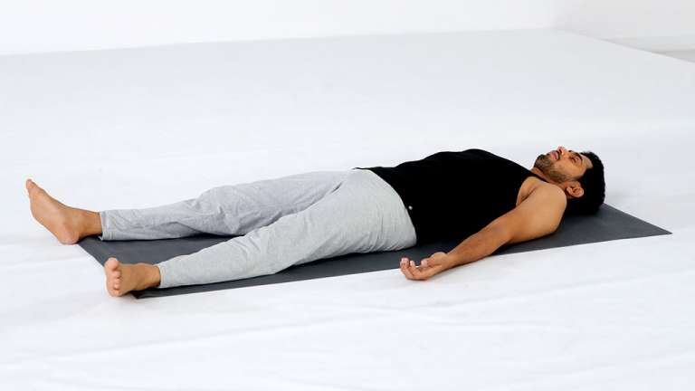

Popular Yoga Postures
1. Downward Dog (Adho Mukha Svanasana)
This posture strengthens the entire body, improves flexibility, and enhances focus.
Steps:
- Begin on hands and knees, with wrists aligned under shoulders.
- Lift knees off the floor, straightening your legs.
- Press hands into the mat, extending arms and back.
- Hold and breathe for a few moments.
2. Tree Pose (Vrksasana)
It enhances balance and stability while promoting mental focus and clarity.
Steps:
- Stand with your feet together and arms by your sides.
- Shift your weight onto your left foot, and bring your right foot to your inner thigh.
- Once balanced, bring your hands to prayer position at your chest.
- Hold the position for 5-10 breaths, then switch sides.
3. Child's Pose (Balasana)
This is a resting pose that helps relieve stress and tension in the body.
Steps:
- Kneel on the floor with your big toes touching and knees hip-width apart.
- Exhale as you sit back on your heels and extend your arms forward.
- Lower your torso between your thighs, resting your forehead on the mat.
- Relax and breathe deeply for 30 seconds to a few minutes.
4. Warrior II (Virabhadrasana II)
This posture strengthens the legs, opens the hips, and improves stamina.
Steps:
- Stand with your feet about 4 feet apart.
- Turn your right foot out 90 degrees and left foot slightly in.
- Bend your right knee, aligning it over your ankle.
- Extend your arms parallel to the floor, gaze over your right hand, and hold.
5. Cobra Pose (Bhujangasana)
It strengthens the spine and opens the chest, improving breathing and posture.
Steps:
- Lie on your stomach with your hands under your shoulders.
- Press into your hands, lifting your chest off the floor.
- Keep your elbows slightly bent and gaze upwards.
- Hold for a few breaths, then slowly release back down.
6. Bridge Pose (Setu Bandhasana)
This posture stretches the chest, neck, and spine while strengthening the glutes and back.
Steps:
- Lie on your back with your knees bent and feet hip-width apart.
- Press your feet into the floor, lifting your hips upward.
- Clasp your hands beneath you and roll your shoulders under.
- Hold for a few breaths, then release back down.
7. Mountain Pose (Tadasana)
This foundational posture helps improve posture and body alignment.
Steps:
- Stand with your feet together and arms at your sides.
- Engage your thigh muscles and lift your kneecaps.
- Lengthen your spine, reaching through the crown of your head.
- Breathe deeply and hold for several breaths.
8. Cat-Cow Pose (Marjaryasana-Bitilasana)
This flow between two poses helps increase spinal flexibility and relieve tension.
Steps:
- Begin on all fours, with wrists under shoulders and knees under hips.
- Inhale as you drop your belly and lift your gaze for Cow Pose.
- Exhale as you round your spine and tuck your chin for Cat Pose.
- Continue to alternate for several breaths.
9. Seated Forward Fold (Paschimottanasana)
It stretches the back, hamstrings, and promotes relaxation.
Steps:
- Sit on the floor with your legs extended in front of you.
- Inhale to lengthen your spine, and exhale as you fold forward.
- Reach for your feet or shins, keeping a long spine.
- Hold for several breaths, then gently rise back up.
10. Corpse Pose (Savasana)
This relaxing pose promotes deep relaxation and stress relief.
Steps:
- Lie flat on your back with your legs extended and arms at your sides.
- Close your eyes, and let your body fully relax into the ground.
- Focus on your breathing and remain still for several minutes.
- When ready, gently wiggle your fingers and toes and slowly sit up.